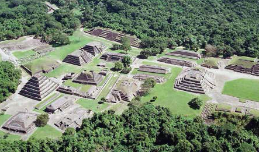

Chichén ItzáYucatán
Chichén ItzáYucatánManuel Felgueréz
Manuel Felguérez nació el 12 de Diciembre de 1928 en el seno de una familia aristocrática. Fue hijo primogénito de un terrateniente de Zacatecas. Personajes...
Feria del Globo
En este bello lugar se le da una connotación muy especial a la fiesta de difuntos: la elevación de globos y faroles de papel de china. Festivales...
Cuajilote

Esta región fue receptora y redistribuidora comercial, aprovechando la red de comunicaciones demarcada por la fisiografía. Zonas Arqueológicas..
Marimba chiapaneca

La marimba tradicional mexicana proviene de Tabasco, Chiapas y Guatemala, y tiene su origen en instrumentos que introdujeron los esclavos negros en la época de la conquista. Cultura Nacional...
Barrancas del Cobre

Sobre una extensión de 600 km de longitud y 250 km de anchura se extienden las majestuosas Barrancas del Cobre, parque natural ubicado dentro del estado de Chihuahua. Destinos...
Isla Mujeres

Las primeras noticias de Isla Mujeres datan del periodo comprendido entre el 564 y el 1516 dC, y la ubican como una provincia maya de Ekab. Destinos..
Ixtapa Zihuatanejo
La palabra Zihuatanejo, una tiene origen en los vocablos en purépechas itzi: agua, huata: cerro y nejo: amarillo verdoso, que en conjunto se expresa como "Agua del cerro amarillo". Destinos...
La casa de los azulejos

La Casa de los Azulejos es un palacio ubicado en el centro histórico de la Ciudad de México (entre las Calle Francisco I. Madero y la Calle Cinco de Mayo). Cultura Nacional...
Tajín
La antigua ciudad de El Tajín se desarrolló a fines del horizonte Clásico, y llegó a su apogeo en la transición al Posclásico, o sea entre 800 y 1150. Zonas Arqueológicas...